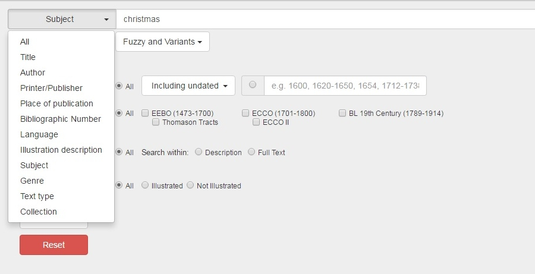
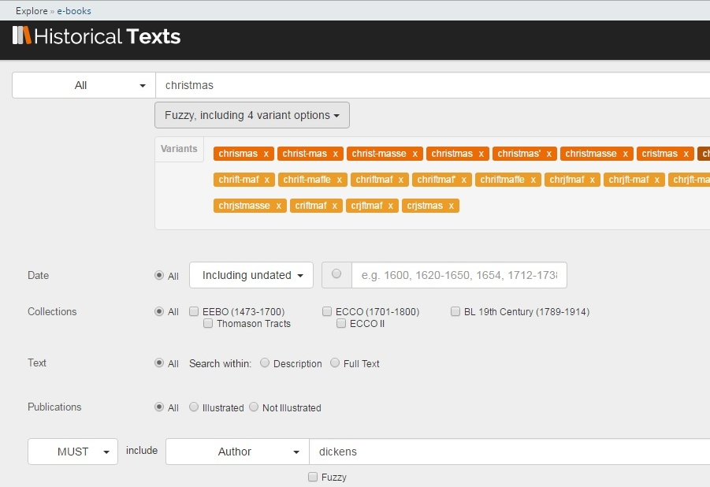

<div class="row">
    <div class="col-xs-12 topSpace">
        <div class="sideMenu">
            <div class="title">Support</div>
            <ul>
                <li><a href="">Support Home</a></li>
                <li><a href="/help/">Help File</a></li>
                <li><a href="/librarians/">Librarians</a></li>
                <li><a href="/faq/">FAQ</a></li>
				<li><a href="/quickref/">Quick Reference Guide</a></li>
				<li><a href="/features/">Features</a>
													 <ul>
            <li><a href="/astronomy">Astronomy</a></li>
            <li><a href="/blcovers">British Library Covers</a></li>
            <li class="selected"><a href="/christmas">Christmas</a></li>
     <!--   <li><a href="/comedy">Comedy, Laughter and Humour</a></li> -->                                                         
			<li><a href="/cookery">Cookery</a></li>
     <!--   <li><a href="/opencookery">Cookery &#45; the UK Medical Heritage Library Collection</a></li> -->                                            
	     	<li><a href="/locallondon">Local History&#58; London</a></li>
			<li><a href="/maps">Maps</a></li>
			<li><a href="/music">Music</a></li>
    <!--    <li><a href="/stem">Science, Technology and Engineering</a></li> -->                                                          
            <li><a href="/shakespeare">Shakespeare</a></li>
     <!--   <li><a href="/openfitness">Sport and Fitness &#45; the UK Medical Heritage Library Collection</a></li> -->                                                         
            <li><a href="/travel">Travel and Explorers</a></li>
     <!--   <li><a href="/opentravel">Travel and Exploration &#45; the UK Medical Heritage Library Collection</a></li> -->                                                        
            <li><a href="/witchcraft">Witchcraft</a></li>
            </ul>
			</li>
			
            </ul>
        </div>

        <div class="support">

            <ol class="breadcrumb">

				    <li><a href="/features/">Features</a></li>
                    <li class="active">Christmas</li>

            </ol>


           <h1>Christmas</h1>

           

           <p class="lead">Historical Texts contains all sorts of publications related to Christmas. Here we&#39;ve selected some of the wonderful and weird for you to enjoy...</p>
		
		<br />
		

<h2>Christmas &#45; The case for and against</h2>

<p>Here we have &ldquo;A Christian plea against Chrismass&rdquo;, &ldquo;The Holy time of Christmas defended&rdquo;, &ldquo;A letter concerning Christmasse sent to a knight in Suffolke&rdquo;, &ldquo;Scotland against popery&rdquo; &ldquo;The examination and tryal of old Father Christmas&rdquo;, and a book of &ldquo;...Sound and good arguments for it, taken and proved out of scripture, as hath been written a long time.&rdquo;</p>
       

	   <div class=row> <div class="col-sm-6 col-md-3"> <div class=thumbnail>  <div class=caption> <h3>A Christian plea against Chrismass and an out&#45;cry against Chrismas&#45;mongers.</h3>
<p>Published&#58; 1656</p> <p><span class="badge">EEBO</span></p><p><a href=https://historicaltexts.jisc.ac.uk/eebo-ocm45097628e class="btn btn-primary" role=button>View text</a> </p> </div> </div> </div> 

<div class=row> <div class="col-sm-6 col-md-3"> <div class=thumbnail>  <div class=caption> <h3>The Holy time of Christmas defended against non&#45;conformists and all others its prophaners and opposers</h3>
<p>Published&#58; 1676</p> <p><span class="badge">EEBO</span></p><p><a href=https://historicaltexts.jisc.ac.uk/eebo-ocm10409811e class="btn btn-primary" role=button>View text</a> </p> </div> </div> </div> 

<div class=row> <div class="col-sm-6 col-md-3"> <div class=thumbnail>  <div class=caption> <h3>A letter concerning Christmasse sent to a knight in Suffolke</h3> <p>Published&#58; 1659</p> <p><span class="badge">EEBO</span></p><p><a href=https://historicaltexts.jisc.ac.uk/eebo-ocm19536726e class="btn btn-primary" role=button>View text</a> </p> </div> </div> </div>
  

</div></div></div>


 <div class=row> <div class="col-sm-6 col-md-3"> <div class=thumbnail>  <div class=caption> <h3>Scotland against popery, or, Christ&#39;s day against Antichrist</h3> <p>Published&#58; 1681</p> <p><span class="badge">EEBO</span></p><p><a href=https://historicaltexts.jisc.ac.uk/eebo-ocm13546223e
 class="btn btn-primary" role=button>View text</a></p> </div> </div> </div> 
 
 <div class=row> <div class="col-sm-6 col-md-3"> <div class=thumbnail>  <div class=caption> <h3>The examination and tryal of old Father Christmas together with his clearing by the jury</h3> <p>Published&#58; 1687</p> <p><span class="badge">EEBO</span></p><p><a href=https://data.historicaltexts.jisc.ac.uk/view?pubId=eebo-99895670e&index=eebo&pageId=eebo-99895670e-153244-2 class="btn btn-primary" role=button>View text</a> </p> </div> </div> </div>
  
 <div class=row> <div class="col-sm-6 col-md-3"> <div class=thumbnail>  <div class=caption> <h3>A ha&#33; Christmas This book of Christmas is a sound and good perswasion for gentlemen, and all wealthy men, to keepe a good Christmas</h3> <p>Published&#58; 1647</p> <p><span class="badge">EEBO</span></p><p><a href=https://historicaltexts.jisc.ac.uk/eebo-99864134e
 class="btn btn-primary" role=button>View text</a> </p> </div> </div> </div> 

 </div></div></div>

 

 
<h2>Expect the unexpected</h2>

<p>Here we have a Christmas menu &#40;including turtle&#33;&#41;, a book of Christmas stories derived from household words, and &ldquo;Paddy Whiskey&#39;s Christmas box for 1792.&rdquo;</p>
 
 <div class=row> <div class="col-sm-6 col-md-3"> <div class=thumbnail>  <div class=caption> <h3>Christmas, 1792. 4 turtles weight 584 lb... </h3> <p>Published&#58; 1792</p><p><span class="badge">ECCO</span></p><p><a href=https://historicaltexts.jisc.ac.uk/eccoii-1319300600 class="btn btn-primary" role=button>View text</a> </p> </div> </div> </div> 
 
 <div class=row> <div class="col-sm-6 col-md-3"> <div class=thumbnail>  <div class=caption> <h3>Christmas Stories from the Household Words.</h3><p>Published&#58; 1859</p> <p><span class="badge">BL</span></p><p><a href=https://historicaltexts.jisc.ac.uk/bl-000931469 class="btn btn-primary" role=button>View text</a> </p> </div> </div> </div>  
 
  <div class=row> <div class="col-sm-6 col-md-3"> <div class=thumbnail>  <div class=caption> <h3>Paddy Whiskey&#39;s Christmas box for 1792.</h3><p>Published&#58; 1792</p> <p><span class="badge">ECCO</span></p><p><a href=https://historicaltexts.jisc.ac.uk/ecco-0157202200 class="btn btn-primary" role=button>View text</a> </p> </div> </div> </div> 
  
   </div></div></div>   

 
   <h2>Christmas Carols &#45; and &ldquo;A Christmas Carol&rdquo;</h2>

<p>Here we have &ldquo;Christmas carolles newely inprynted&rdquo;, &ldquo;Three new Christmas carols&rdquo;, and &ldquo;A Christmas Carol&rdquo;...</p> 

  <div class=row> <div class="col-sm-6 col-md-3"> <div class=thumbnail>  <div class=caption> <h3>Christmas carolles newely inprynted</h3> <p>Published&#58; 1545</p><p><span class="badge">EEBO</span></p><p><a href=https://data.historicaltexts.jisc.ac.uk/view?pubId=eebo-ocm22220602e&index=eebo&pageId=eebo-ocm22220602e-25243-2
 class="btn btn-primary" role=button>View text</a> </p> </div> </div> </div> 
 
 <div class=row> <div class="col-sm-6 col-md-3"> <div class=thumbnail>  <div class=caption> <h3>Three new Christmas carols</h3><p>Published&#58; 1770</p> <p><span class="badge">ECCO</span></p><p><a href=https://historicaltexts.jisc.ac.uk/ecco-1028701900 class="btn btn-primary" role=button>View text</a> </p> </div> </div> </div>  
 
  <div class=row> <div class="col-sm-6 col-md-3"> <div class=thumbnail>  <div class=caption> <h3>A Christmas Carol ... With illustrations from drawings by S. Eytinge.</h3><p>Published&#58; 1869</p> <p><span class="badge">BL</span></p><p><a href=https://data.historicaltexts.jisc.ac.uk/view?pubId=bl-000931332&index=bl&pageId=bl-000931332-613843-142 class="btn btn-primary" role=button>View text</a> </p> </div> </div> </div> 
  
   </div></div></div>   

      <h2>Christmas content in surprising places...</h2>

<p>Here we have three festive publications taken from the UK Medical Heritage Library collection <a href="https://ukmhl.historicaltexts.jisc.ac.uk/home">&#40;UKMHL&#41;</a> &#45; &ldquo;Old Christmas&rdquo;, &ldquo;The humourist, a companion for the Christmas fireside&rdquo; and &ldquo;The Book of Days&rdquo;....</p>

  <div class=row> <div class="col-sm-6 col-md-3"> <div class=thumbnail>  <div class=caption> <h3>Old Christmas</h3> <p>Published&#58; 1876</p><p><span class="badge">UKMHL</span></p><p><a href=https://data.ukmhl.historicaltexts.jisc.ac.uk/view?pubId=ukmhl-b21528299&index=ukmhl&pageId=ukmhl-b21528299-42
 class="btn btn-primary" role=button>View text</a> </p> </div> </div> </div> 
 
 <div class=row> <div class="col-sm-6 col-md-3"> <div class=thumbnail>  <div class=caption> <h3>The humourist, a companion for the Christmas fireside</h3><p>Published&#58; 1831</p> <p><span class="badge">UKMHL</span></p><p><a href=https://data.ukmhl.historicaltexts.jisc.ac.uk/view?pubId=ukmhl-b22020123&index=ukmhl&pageId=ukmhl-b22020123-181 class="btn btn-primary" role=button>View text</a> </p> </div> </div> </div>  
 
  <div class=row> <div class="col-sm-6 col-md-3"> <div class=thumbnail>  <div class=caption> <h3>The book of days &#40;Volume 0002&#41;</h3><p>Published&#58; 1879&#45;1881</p> <p><span class="badge">UKMHL</span></p><p><a href=https://data.ukmhl.historicaltexts.jisc.ac.uk/view?pubId=ukmhl-b22650477_0002&index=ukmhl&pageId=ukmhl-b22650477_0002-746 class="btn btn-primary" role=button>View text</a> </p> </div> </div> </div> 
  
   </div></div></div>   
   
   <h2>Stories set at Christmas, stories for Christmastime</h2>
 <p> Here we have views of Christmas as a Bachelor or an Australian, stories from &ldquo;The Captain&#39;s Cabin&rdquo; and the &ldquo;Ancient Mariner&rdquo;, a Christmas poem, some other tales and stories, and &ldquo;Christmas in the Olden Time&rdquo;.</p>
 
 <div class=row> <div class="col-sm-6 col-md-3"> <div class=thumbnail>  <div class=caption> <h3>An Ancient Mariner. A Christmas story. By Lyulph.</h3> <p>Published&#58; 1870</p><p><span class="badge">BL</span></p><p><a href=https://data.historicaltexts.jisc.ac.uk/view?pubId=bl-002297425&index=bl&pageId=bl-002297425-619726-5 class="btn btn-primary" role=button>View text</a> </p> </div> </div> </div> 
 
 <div class=row> <div class="col-sm-6 col-md-3"> <div class=thumbnail>  <div class=caption> <h3>The Bachelor&#39;s Christmas, and other stories</h3><p>Published&#58; 1895</p> <p><span class="badge">BL</span></p><p><a href=https://data.historicaltexts.jisc.ac.uk/view?pubId=bl-001488729&index=bl&pageId=bl-001488729-646217-8 class="btn btn-primary" role=button>View text</a> </p> </div> </div> </div>  
 
  <div class=row> <div class="col-sm-6 col-md-3"> <div class=thumbnail>  <div class=caption> <h3>The Captain&#39;s Cabin, a Christmas Yarn</h3><p>Published&#58; 1877</p> <p><span class="badge">BL</span></p><p><a href=https://historicaltexts.jisc.ac.uk/bl-001862061 class="btn btn-primary" role=button>View text</a> </p> </div> </div> </div> 
  
   </div></div></div>    
   
    <div class=row> <div class="col-sm-6 col-md-3"> <div class=thumbnail>  <div class=caption> <h3>Christabelle. A tale of Christmas, and other poems. By Aura, etc.</h3> <p>Published&#58; 1874&#45;1875</p><p><span class="badge">BL</span></p><p><a href=https://data.historicaltexts.jisc.ac.uk/view?pubId=bl-000143387&index=bl&pageId=bl-000143387-583173-8 class="btn btn-primary" role=button>View text</a> </p> </div> </div> </div> 
 
 <div class=row> <div class="col-sm-6 col-md-3"> <div class=thumbnail>  <div class=caption> <h3>Round about our coal&#45;fire&#58; or, Christmas entertainments. Containing, Christmas gambols, tropes, figures</h3><p>Published&#58; 1732</p> <p><span class="badge">ECCO</span></p><p><a href=https://data.historicaltexts.jisc.ac.uk/view?pubId=ecco-0723500700&index=ecco&pageId=ecco-0723500700-490 class="btn btn-primary" role=button>View text</a> </p> </div> </div> </div>  
 
  <div class=row> <div class="col-sm-6 col-md-3"> <div class=thumbnail>  <div class=caption> <h3>&#39;Twixt Shadow and Shine. An Australian story of Christmas.</h3><p>Published&#58; 1893</p> <p><span class="badge">BL</span></p><p><a href=https://historicaltexts.jisc.ac.uk/bl-000715499 class="btn btn-primary" role=button>View text</a> </p> </div> </div> </div> 
  
   </div></div></div>    
   
   
    <div class=row> <div class="col-sm-6 col-md-3"> <div class=thumbnail>  <div class=caption> <h3>Christmas tales, for the amusement and instruction of young ladies and gentlemen in winter evenings</h3> <p>Published&#58; 1795</p><p><span class="badge">ECCO</span></p><p><a href=https://data.historicaltexts.jisc.ac.uk/view?pubId=ecco-0642101500&index=ecco&pageId=ecco-0642101500-410 class="btn btn-primary" role=button>View text</a> </p> </div> </div> </div> 
 
 <div class=row> <div class="col-sm-6 col-md-3"> <div class=thumbnail>  <div class=caption> <h3>The mistletoe &#45; A Christmas tale.</h3><p>Published&#58; 1800</p> <p><span class="badge">ECCO</span></p><p><a href=https://historicaltexts.jisc.ac.uk/ecco-0094100400 class="btn btn-primary" role=button>View text</a> </p> </div> </div> </div>  
 
  <div class=row> <div class="col-sm-6 col-md-3"> <div class=thumbnail>  <div class=caption> <h3>Christmas in the Olden Time. From Marmion Introduction to Canto VI.</h3><p>Published&#58; 1887</p> <p><span class="badge">BL</span></p><p><a href=https://data.historicaltexts.jisc.ac.uk/view?pubId=bl-003317886&index=bl&pageId=bl-003317886-1171116-37 class="btn btn-primary" role=button>View text</a> </p> </div> </div> </div> 
  
   </div></div></div>    
   
 
 
 <h2>Search tips</h2>
 
 <p>Users looking for Christmas content on Historical Texts can search on different fields 	&#40;e.g. title, all text, bibliographic data only&#41; using the drop&#45;down selector. Searching the Subject fields for &ldquo;christmas&rdquo; yields a small number of results, all from EEBO.</p>
 
 <br />
 
 
 <br />
 <br />
 
 <p>Fuzzy and variant spelling options are invaluable when looking for early works. Users can add rows to combine search terms.</p>
 
 <br /> 

 
 
 